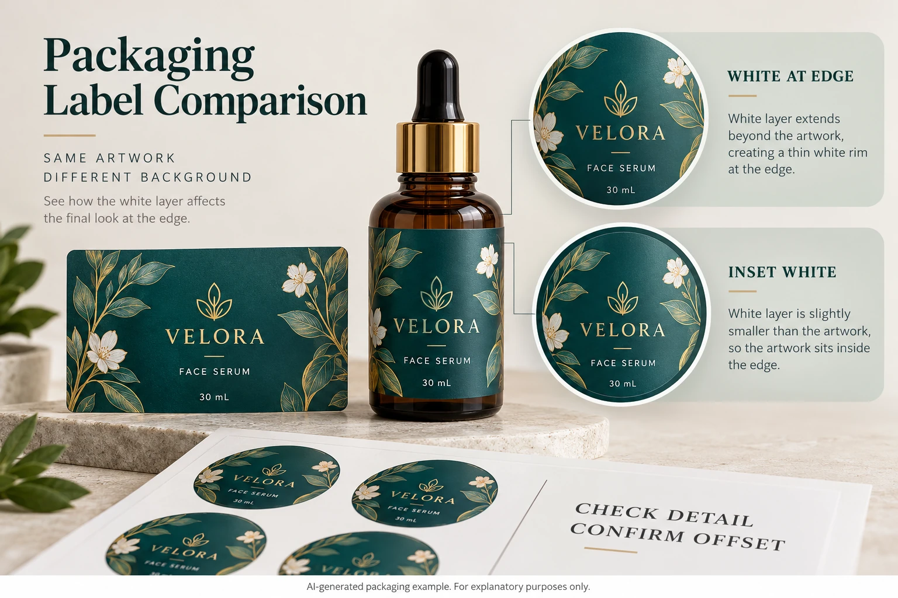

Locate the edge that needs a decision
Start with an identified element in the released artwork: the edge of a colored wordmark, a botanical illustration or an opaque panel. Mark the location on the current PDF. State whether the intention is an opaque colored object, transparent color or a deliberately visible white outline.
Those intentions can look similar in a quick screen preview. They need different instructions. An intentional white border should not disappear because someone assumes every exposed white edge is an error.
Keep the bottle in the conversation. A white fringe beside teal may be conspicuous on an amber filled bottle and much less obvious against another background. That observation does not establish a different registration capability. It changes which feature deserves closer visual approval.
Our clear cosmetic label guide covers the broader decision to use transparency and white backing. Here the specific question is what happens where the backing and colored artwork meet.
Ask prepress to explain the proposed pullback
Esko's White Underprint documentation describes choke and spread operations when adjusting white underprint. That establishes an available preparation method, not a dimension appropriate to your job.
Ask the printer which objects will change, who generates that change and how it will be represented in the supplied production file. The designer should know whether to deliver a complete white layer or let the receiving prepress team create it under an agreed instruction.
Do not have both parties independently apply a pullback. Two adjustments can leave a smaller backed region than either reviewer intended. Record whether the file contains the adjustment already and identify the replacement export when it changes.
Request a marked comparison at a useful enlarged view, then return to actual print size. Enlargement helps explain the geometry; actual size helps judge whether the resulting detail still does its job. Neither establishes physical registration performance on its own.
Protect details that are smaller than the adjustment
Consider a hypothetical solid panel with a broad colored boundary. It may give prepress room to adjust the white edge while preserving a substantial backed area. A fine botanical stem beside the same panel can need separate treatment. Applying one operation without inspecting the stem can remove its useful backing.
Ask for attention to narrow strokes, small reversed spaces, corners and isolated details. The answer may be a locally different treatment, a simplified illustration or an approved design change. It should be explained rather than hidden inside a file described only as print ready.
There is also a legitimate alternative: use an opaque background or another construction when the design cannot tolerate the proposed clear-label compromise. That can reduce one visual dependency, although it changes the appearance and needs a new quotation and sample review. Clear film does not have to win every comparison.
Use an edge-review record
Complete the following with the designer and printer. The table is a working review tool, not a registration standard.
| Field | What to record | Decision it supports |
|---|---|---|
| Artwork identity | Export reference, revision and responsible prepress contact | Everyone reviews the same file |
| Object and intended appearance | Marked location; opaque, transparent or intentional border | The adjustment has a stated purpose |
| White-layer owner | Supplied layer or printer-generated layer | Avoid duplicate adjustments |
| Proposed edge treatment | Supplier-confirmed method and affected objects | Identify exactly what changes |
| Vulnerable details | Fine strokes, small spaces and corners | Locate features needing exception review |
| Evidence | Separation comparison and relevant applied physical sample | Separate file geometry from printed appearance |
| Release | Accepted scope, unresolved detail and approver | Prevent a broad approval hiding an open issue |
Read the record from top to bottom. First establish the file and intention. Then confirm ownership, inspect the adjustment and list the vulnerable details. Ask the printer which physical evidence is appropriate for the construction before recording final appearance acceptance.
If the proposed treatment removes an important feature, hold that affected artwork release. Send the marked location back to design and prepress. Do not compensate by changing the white layer informally after another person has signed off the PDF.

Keep adjacent approvals separate
An acceptable edge relationship does not approve white opacity, color matching, barcode performance or adhesion. It is one decision within the complete pack review. The overprint guide addresses whether the relevant objects survive output with their intended behavior.
If the printer proposes a different material or production route, ask whether the previous edge treatment still applies. A familiar graphic is not evidence that the same preparation instruction remains suitable on a different process.
For custom cosmetic labels, provide the filled-bottle reference, finished label dimensions, quantity per design, current export and the marked edge question. Identify any required visual detail that must remain backed. Use the inquiry form to prepare a message, then send files through email or WhatsApp. The form does not upload attachments. Ask for one acknowledged edge treatment on one identified production file.